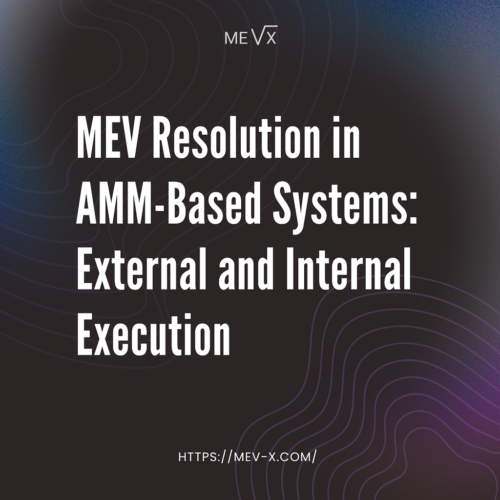

This material was created by the MEV-X team for educational purposes. MEV-X is a research and commercial project created for the extraction of MEV, which aims to form a reliable scientific community and promote the fair distribution of the extracted MEV.

On-chain markets do not converge continuously, price formation occurs through discrete state transitions that are finalized at transaction boundaries. Each swap commits a new state, and only once that state exists can the rest of the system respond to it.
When a trade updates a pool, it often leaves behind a transient imbalance. The pool price shifts immediately, while the surrounding market reacts with a delay. This imbalance is small, mechanical, and predictable, arising directly from executing trades against curve-based liquidity.
What happens next depends on where this imbalance is resolved. In practice, there are two broad approaches: the adjustment can be handled externally by the surrounding execution environment, or it can be resolved locally within the application that produced it.
External Resolution of Post-Swap Imbalances
In the dominant execution model, post-swap imbalances are resolved outside the application that created them. Once the updated state becomes visible, it enters the block-level execution environment, where independent actors simulate the new pool state, identify profitable adjustments, and compete to include them.
As a result, the economic effects of rebalancing are decoupled from the location where the imbalance originates. The pool state adjusts and price consistency is restored, but the value generated by this adjustment is realized outside the application boundary.
From an execution perspective, the protocol participates only indirectly. It supplies the liquidity against which the imbalance forms, but does not participate in the mechanism that resolves it. The corrective action is carried out downstream, within the block construction process, where the protocol has no influence over ordering, execution, or value distribution.
This separation introduces an asymmetry: the costs associated with price movement are incurred at the pool level, while the benefits of restoring equilibrium are realized at the infrastructure level. Over time, this shifts the effective economics of the application. Value created by user activity and pool dynamics does not accumulate within the protocol, but is instead exported to the surrounding execution layer as a byproduct of standard block-level resolution.
Internal Resolution of Post-Swap Imbalances
Internal resolution relocates the adjustment mechanism to the point where the imbalance is created. Instead of allowing the post-swap state to propagate into the block-level execution environment, the application evaluates and resolves the imbalance within its own execution context, before the state becomes externally visible.
In this model, the post-swap state is examined immediately after the pool update, while it remains local to the application. If a profitable adjustment exists, it is executed as part of the originating transaction, prior to any external exposure of the post-swap state.
From an execution perspective, this eliminates competitive resolution. There is no exposure to the block-building pipeline and no reliance on external ordering or inclusion dynamics. The resolution occurs deterministically, governed by application-level logic rather than by block-level competition.
Because the adjustment is handled locally, the economic effects of rebalancing remain aligned with their origin. The same execution context that produces the imbalance also realizes the surplus generated by resolving it. Value created by pool dynamics and user activity is retained within the application boundary rather than exported to the surrounding execution layer.
A Practical Instantiation of Internal Resolution
The internal resolution model described above is not theoretical. It can be instantiated within AMM architectures that expose controlled execution points around state updates, allowing post-swap adjustments to be evaluated before intermediate states become externally visible.
In such designs, the pool completes its primary state transition and then invokes an application-level execution path that has access to the final post-swap state. This execution path operates within the application boundary and can inspect whether the updated balances introduce a profitable rebalancing opportunity.
Crucially, this approach does not alter the swap itself or the pricing logic of the AMM, the user-facing execution remains unchanged. The only difference lies in where post-swap imbalances are resolved: instead of propagating outward and being handled competitively at the block level, they are evaluated and settled within an application-controlled context.
We implemented a concrete instantiation of this model — MEV-X Homelander. The design leverages post-swap callbacks available in modern AMM frameworks to trigger an internal execution sequence immediately after a swap updates pool balances. This sequence operates within the scope of a single transaction and evaluates whether the new state admits a profitable post-swap adjustment.
When such an adjustment exists, it is executed atomically as part of the same execution flow, ensuring that both the original swap and the corrective action either complete together or not at all. The system intercepts only the post-swap state to perform localized rebalancing, leaving AMM pricing logic and user-facing execution unchanged.
By collapsing detection and resolution into a single transactional workflow, this implementation avoids block-level competition and intermediate state exposure. It serves as a practical demonstration that internal resolution can be realized with strong execution guarantees, while keeping protocol logic minimal and tightly scoped.
While adversarial strategies exist, MEV primarily follows from the mechanics of on-chain price formation. As long as markets update state discretely, post-swap imbalances will persist. The relevant design question is therefore not how to eliminate MEV, but where it should be resolved.
MEV Resolution in AMM-Based Systems: External and Internal Execution was originally published in Coinmonks on Medium, where people are continuing the conversation by highlighting and responding to this story.